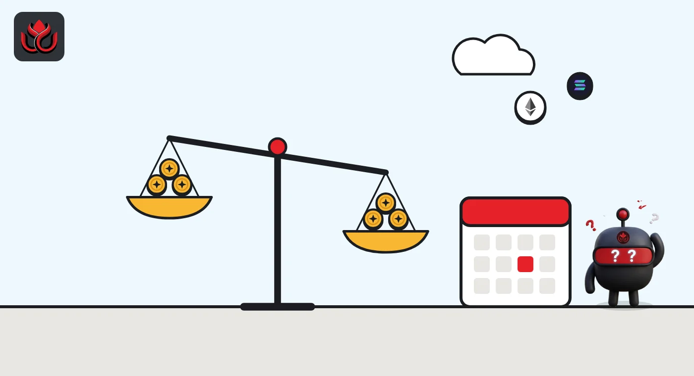
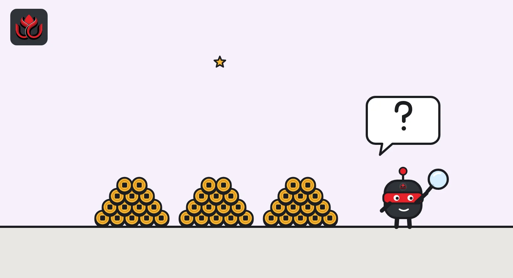

Crypto taxes in the US: Form 1099-DA explained, from proceeds to cost basis
Form 1099-DA is the IRS form US crypto brokers use to report your sales. It shows gross proceeds for sales from 2025 and adds cost basis for certain sales from 2026, but you must report all crypto gains and income whether or not you get one.
Key points
- Form 1099-DA reports proceeds, and sometimes cost basis, when you sell or swap crypto through a broker such as a custodial exchange.
- Gross proceeds are reported for transactions from January 1, 2025. Cost basis is added for certain transactions from January 1, 2026, mainly crypto bought after 2025 and kept on the same platform.
- Small stablecoin sales of $10,000 or less a year and some NFT sales of $600 or less can be left off. Staking and lending are not reported on the form for now.
- The form does not replace your own records. The IRS says you must report all digital asset income, gains and losses either way.
What is Form 1099-DA?
Form 1099-DA is the tax form brokers use to report "proceeds from (and in some cases, basis for) digital asset dispositions" to you and to the IRS, the IRS says. A disposition is any time you get rid of crypto: selling it for dollars, swapping it for another coin, spending it on goods or services, or using it to pay a broker's transaction costs.
It is the crypto version of the Form 1099-B that stock brokers have long sent. The rules come from final regulations Treasury and the IRS issued in June 2024, per the IRS.
Who sends Form 1099-DA?
Brokers do. The IRS lists custodial trading platforms, certain hosted wallet providers, crypto kiosks (ATMs) and certain processors of digital asset payments, its digital assets page says. For 2025, the rules generally apply to US brokers. If you trade on an exchange based outside the US, you may not get a form, but you still have to report the trades.
Brokers that never take possession of your crypto, such as many decentralized platforms, are not covered by these rules, the IRS says. Simply moving coins between two wallets you control is generally not a sale, though paying the network fee in crypto can count as disposing of the coins used for the fee.

What does Form 1099-DA show for 2025 and 2026?
The rollout comes in two steps. Brokers must report gross proceeds for transactions on or after January 1, 2025, and basis for certain transactions on or after January 1, 2026, the IRS says. Gross proceeds are what you received from the sale, minus transaction costs. Basis is what you paid, which you need to work out your gain or loss.
Basis reporting is mandatory only for "covered securities": crypto acquired after 2025 in an account where the broker held it for you, and kept there until you sold, according to the form instructions. Coins bought before 2026, or transferred in from elsewhere, are noncovered. For those, the broker can check Box 9 and leave basis blank.
In practice, the forms for 2025 sales, sent early in 2026, show proceeds without basis. Basis starts appearing for sales of crypto bought from 2026 on the same platform.
What is not reported on Form 1099-DA?
Several things are left off, according to the IRS instructions:
- Small stablecoin sales: if your total gross proceeds from qualifying stablecoin sales are $10,000 or less for the year, brokers do not report them.
- Small NFT sales: specified NFT sales are not reported if total proceeds are $600 or less for the year.
- Staking, lending and wrapping: under IRS Notice 2024-57, brokers need not report these transactions for now, and staking rewards are not reported on Form 1099-DA.
Not reported does not mean not taxed. The IRS says you must report income, gains and losses from all digital asset transactions on your return.

How do brokers pick which coins you sold?
If you bought the same coin at different prices, which units you sold changes your gain. The IRS lets brokers use acquisition information you provide to decide which units were sold, but this is "permitted, but not required," its broker FAQ says. Even then, the broker may not use your information to report your basis on the form. When a fee is paid in units of the same coin and no specific lot is identified, first in, first out applies.
Stablecoins get their own test. A coin counts as a qualifying stablecoin for the simpler reporting only if it holds its peg. A single trade more than 3% off does not fail the test. A failure takes a deviation across a consecutive 10-day period, and brokers may apply the test using only sales on their own platform.
Brokers that use the optional stablecoin method can leave many boxes blank and enter total proceeds in one box, the instructions show. That is why your stablecoin sales may appear as a single total line instead of trade by trade.
There is also relief on backup withholding, the tax a broker withholds when it lacks a correct taxpayer ID. It covers all 2025 transactions and, for 2026, transactions where the broker has matched your ID with IRS records, the IRS says.
How is crypto taxed in the US?
The IRS treats crypto as property, not currency, it says. That has a few consequences:
- Selling, swapping or spending crypto held as an investment generally creates a capital gain or loss, reported on Form 8949.
- Crypto received for services, as a reward, or from mining or staking is income, generally reported on Schedule 1 of Form 1040, or on Schedule C for a business.
- Every Form 1040 asks a yes-or-no question about whether you received, sold, exchanged or otherwise disposed of a digital asset during the year.
Keep records of every purchase, receipt, sale and swap, including the date and time, number of units, fair market value in dollars and cost basis.
What should you do when your Form 1099-DA arrives?
Use it with your own records. The IRS says you must calculate basis before filing. If the form has wrong information, ask the broker listed as "Filer" for a corrected form. The IRS says not to contact it, because it cannot correct the form. If you got a form you should not have, contact the issuer, keep copies, and do not hold up your return, it advises.
Brokers got some breathing room for the first year. Under Notice 2024-56, the IRS will not impose penalties for 2025 forms if the broker makes a good-faith effort to comply. A separate procedure, Rev. Proc. 2024-28, let taxpayers allocate unused basis to the coins still held in each wallet or account as of January 1, 2025.
Could the rules change?
Congress is looking at crypto taxes. In September 2026, a House committee approved the Digital Asset Tax Certainty Act, which would change the tax treatment of small network fees and stablecoins and apply wash-sale rules to crypto. LC Insight covered the 38 to 5 vote. It is not law, and Form 1099-DA reporting applies regardless.
LC Insight analysis
This section is our reading of the facts above, not a statement of fact.
- We think the biggest risk for taxpayers is the blank basis box. A form that shows proceeds with no basis can look like a large gain unless you have your own purchase records.
- Coins moved between platforms lose their basis trail on the broker's side. People who use several exchanges and self-custody wallets will need good records or tax software for years to come.
What's next
- IRS guidance on any reporting for staking, lending and wrapping
- Whether the House crypto tax bill moves to a floor vote
- First forms showing cost basis for 2026 sales
Frequently asked questions
When do I get Form 1099-DA for 2025?
Brokers sent it for 2025 transactions in the 2026 filing season. Check the IRS's Publication 1099 and the form instructions for the exact deadlines.
Does Form 1099-DA show my cost basis?
Only for certain sales from January 1, 2026, mainly crypto bought after 2025 and held with the same broker until sold. For older or transferred-in coins, basis may be blank.
Do I report crypto if I did not get a 1099-DA?
Yes. The IRS says you must report all digital asset income, gains and losses whether or not you receive a form.
Is staking reported on Form 1099-DA?
No. Rewards and staking payments are not reported on Form 1099-DA, but staking rewards are still taxable income.
Disclaimer. This article is based on public information and the sources listed below as of the update time shown. It is for information only and is not investment, legal or tax advice. Figures may change as companies and authorities publish new data.